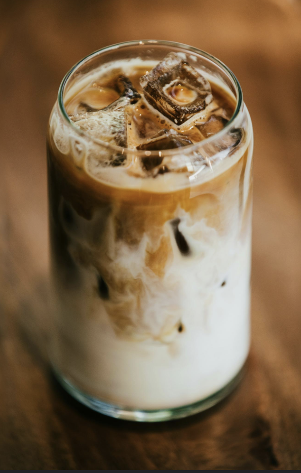

About Us
Coffee & Flowers. The best of both worlds. We offer you an opportunity to enjoy a cup of coffee to wake up but also the ability to purchase flowers to brighten your day. If you would like to see our current cycle of available flowers or pre-order, please go to our flower order tab
- Weekdays: 7:30am - 6pm
- Weekends: 10am - 6pm
Popular Times:
Popular Items

Oat Iced Latte
The perfect non-dairy drink to start your morning off with
Fresh Rose Bundle
A classic way to brighten someones day